Programming Projects
AI Melody Generator
Created a melody generator that takes in a song from a midi, extracting musical aspects of song, recognizing patterns of the musical structure by using Long Short Term Memory(LSTM) Neural Network, and composing its own original melodies based on the patterns it had learned. Part of a long term project to create a full AI song composer, an AI that can generate entire songs with a series melodies.
Dense Optical Flow based Emotion Recognition System
Worked with a Rapiro robot by programming a computer vision program such as an emotion recognition system based on facemovements using Dense Optical Flow and trained it by using Support Vector Machines. Takes advantage of facial movements lack of vulnerability to lighting and unique facial appearance that an emotion classifier would havewith just static images, creating a more accurate and robust emotion classifier.
Wrote a research paper and presented and published it as 1st author at the 2015 IEEE 12th International Conference (MASS) workshop in Dallas, Texas.
You can read it here
(Note: the video above shows that the program shows the wrong confidence score information. This was fixed after the video was recorded.)
Click here to see the program implemented in the Raspberry Pi of the Rapiro Robot
Wrote a research paper and presented and published it as 1st author at the 2015 IEEE 12th International Conference (MASS) workshop in Dallas, Texas.
You can read it here
(Note: the video above shows that the program shows the wrong confidence score information. This was fixed after the video was recorded.)
Click here to see the program implemented in the Raspberry Pi of the Rapiro Robot
Trap shooting tracker and hit detector
Made a program in OpenCV that tracks a flying clay pigeon disk and recognize whether a bullet hit the disk or missed. Is also able to detect the different type of hits it made (whether it was a solid hit, a decent hit [it splits into fragments], or a weak hit [change trajectory]).
Mario AI via Deep Q-Learning
Decided to play around with reinforcement learning, so I implemented deep Q-learning and convolution neural networks using Pytorch in order to get an AI to play Mario and complete the first level (World 1-1) of Super Mario Bros. We take in pure pixel data from a Mario emulator (compatible with Open AI Gym) to feed into a CNN network and preform q-learning in the game.
(sometimes Mario takes non-optimal actions which leds him to being stuck at tall pipes, but this will be improved in the future)
Face Tracking via Haar Classification and Lucas Kanade
Improved face tracking sample from OpenCV documentation by combining both Harr Classifcation and Lucas Kanade optical flow algorithm. This allowed the computer to track the face/head in various different angles (front face to side face) even with limited face dataset
Lyrics Generator Based on Markov Chains
Implemented markov chains on lyrics data scrapped from the web to create program that can generate its own unique set of lyrics based on genre. Also have the capability of creating lyrics based on syllable count per line. Part of a long term project to create a full AI song composer.
Trash Detection on the Beach for Autonomous Drones though Sand Segmentation

Developped a script that would allow an autonomous drone to analyze a beach scene, detect trash on the beach, analyzing it based on certain properties of the trash (such as shape),and pick it up accordingly. Implemented backhistogram projection and morphological transform in order to segment out the the sand and detect the trash. Used the Bag of Words model to preform object recognition on each of the trash pieces (recognize between trash paper, water bottle, or plastic bag). This will be able to autonomate the process of picking up trash on the beach.
Pick up robot for Amazon Robotics Challenge
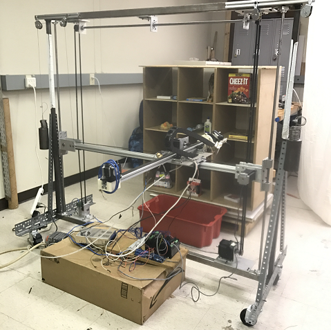
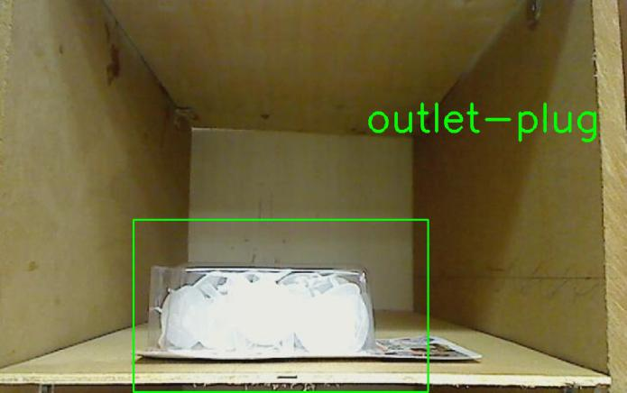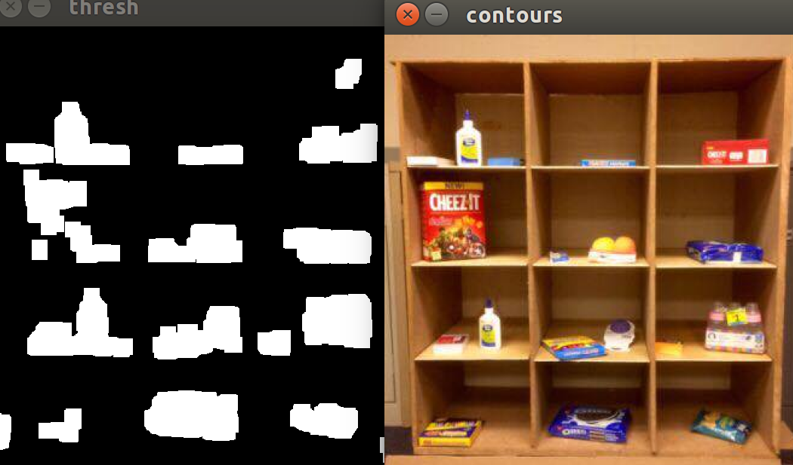
Designeing intelligence of an Amazon Picking Challenge robot through computer vision and machine learning. Implemented 2D object recognition with convolution neural networks. Currently researching in effective image segmentation algorithms for object localization. Leading team of industrial engineering students (senior undergraduate + master graduates) for the development of the autonomous robot. Attempting to lead the team to be the first Rutgers team to enter nationals of the Amazon competition.
Charm City Murals (mural detector)
 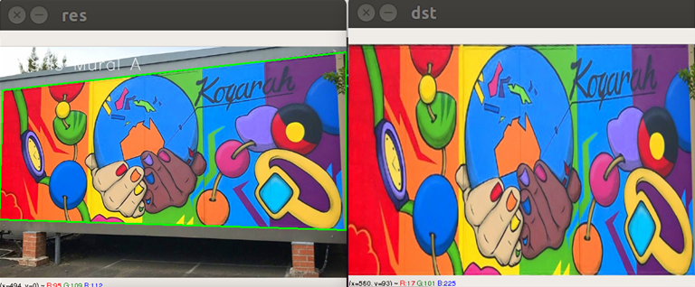
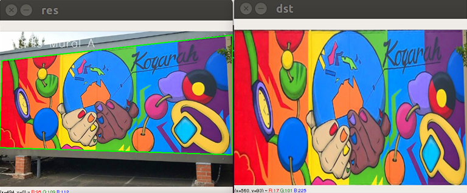
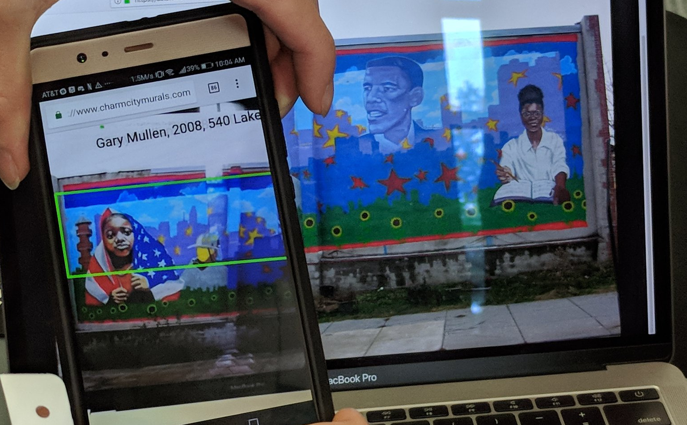
This program uses canny edge detection, morphological transform, and convolutional neural networks to detect and recognize historical murals on various walls in Baltimore. After it recognizes the mural, it would give information about the mural's history and origin. Also preform perspective transform if one wants to get a better, more birds eye view of the mural.
Won the 2nd place in HopHacks Fall 2018 hackathon, along with Google Cloud API and "Most-Baltimore" prize.
Won the 2nd place in HopHacks Fall 2018 hackathon, along with Google Cloud API and "Most-Baltimore" prize.
Fire Detector and Analyzer
This program uses computer vision searches for fires by searching for intense brightness and fire-like movement in the video. It then monitors the rate of growth and current size of the fire to determine on how threatening a fire is becoming and gives a pre-emptive warning (via phone notification) to nearby individuals if it gets to a certain size / surpasses a certain growth rate.
This was designed for PennApps Fall 2018 where it placed in top 30 and won the DocuSign API prize.
This was designed for PennApps Fall 2018 where it placed in top 30 and won the DocuSign API prize.
Tactile Vision Shirt
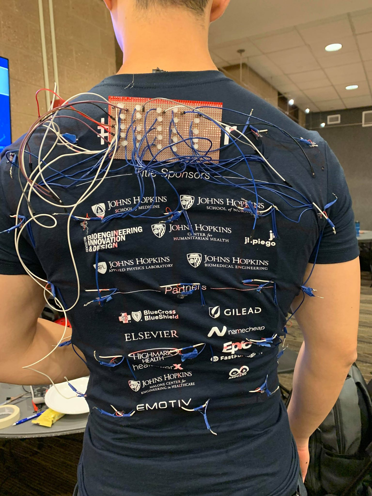 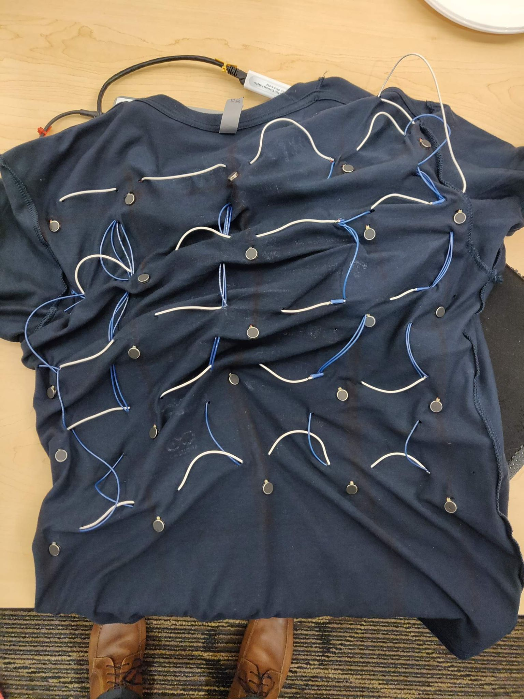
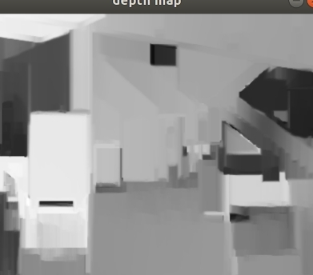 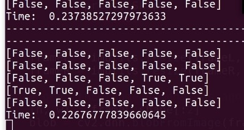 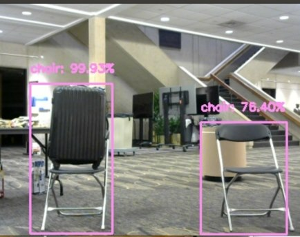
Made a hardware hack that recreated the sense of sight to the blind through the use of tactile touch. Based on the concept of graphesthesia, this project utilized a grid of 5 x 5 vibration motors sewed on the back of a shirt and two webcams to locate the object in order to vibrate the object's 3D location on the user's back. Implemented depth maps through stereo vision and object detection through YOLO neural network architecture (MobileNet) to be used on a Raspberry Pi. Also designed a downsampling algorithm to preserve semantic and spatial information from a webcam with 300x400 resolution to 5x5 resolution for the vibration motor grid.
Won 1st place overall at MedHacks Fall 2019, along with winning the Global Management of Chronic Disease track.
Won 1st place overall at MedHacks Fall 2019, along with winning the Global Management of Chronic Disease track.
Automatic decision-based workflow generator via speech processing (Autoflow)
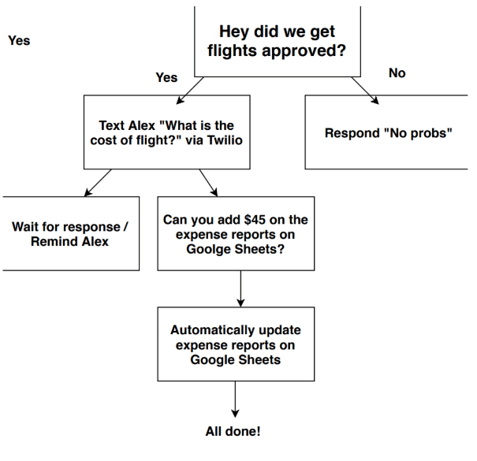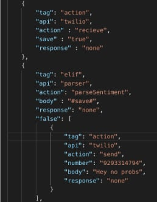
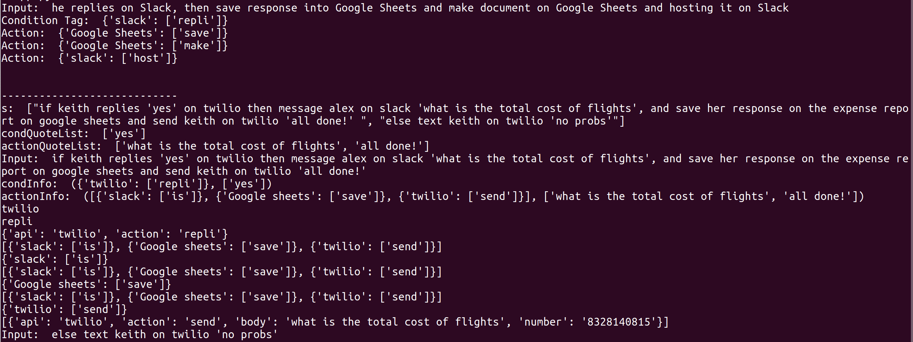
Made an app that can create an automated workflow of APIs produced through spoken speech. This project takes in a spoken query via speech to text and uses the query to build an automated decision tree that handles the workflow's use various types of APIs (via Standard Library) under dynamic and conditional situations. Created an algorithm that turns user's input queries into a automated decision tree through parts of speech tagging, as well as designed an algorithm that detect redundant queries and workflows by using cosine similarity. Also helped designed the algorithm that represents the automated workflow tree in the form of JSON files.
Placed in the finalist round at HackPrinceton Fall 2019 as well as winning the Standard Library prize.
Placed in the finalist round at HackPrinceton Fall 2019 as well as winning the Standard Library prize.
Deepfake algorithm (CycleGANs)
Obama's face swapped with Trump's
 (Press the left or right arrows to change photos)
(Press the left or right arrows to change photos)
Trump's face swapped with Putin's

Trump's face swapped with Putin's

Putin's face swapped with Trump's

Obama's face swapped with Trump's

A girl's face (Shuka) swapped with Trump's


A girl's face (Shuka) swapped with Trump's

Arisa's face swapped with Shuka's


Arisa's face swapped with Shuka's


Shuka's face swapped with Arisa


Arisa's face swapped with Shuka's

Made an AI that can transform the face of anyone into image with another person's face (in this case, Obama -> Trump and Trump -> Putin). The algorithm was implemented through a CycleGAN to change the image domain of facial data along affline warping and transformation to extract the original face and replace with a generated face of another subject. Extracted training data using a web scaper along with implementing several different image preproccessing scripts.
Hand-drawn graphs to LATEX translator
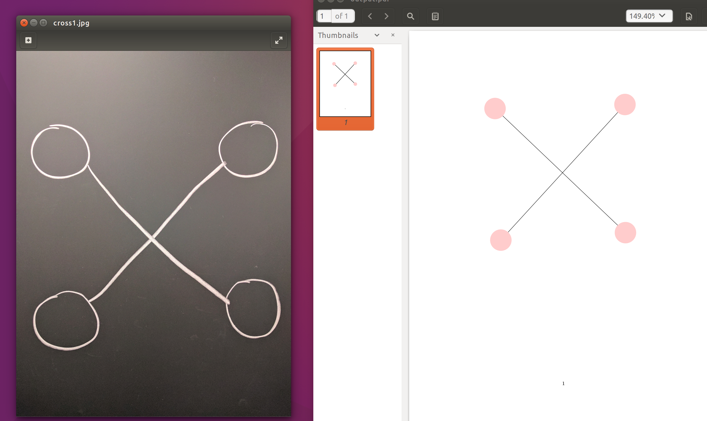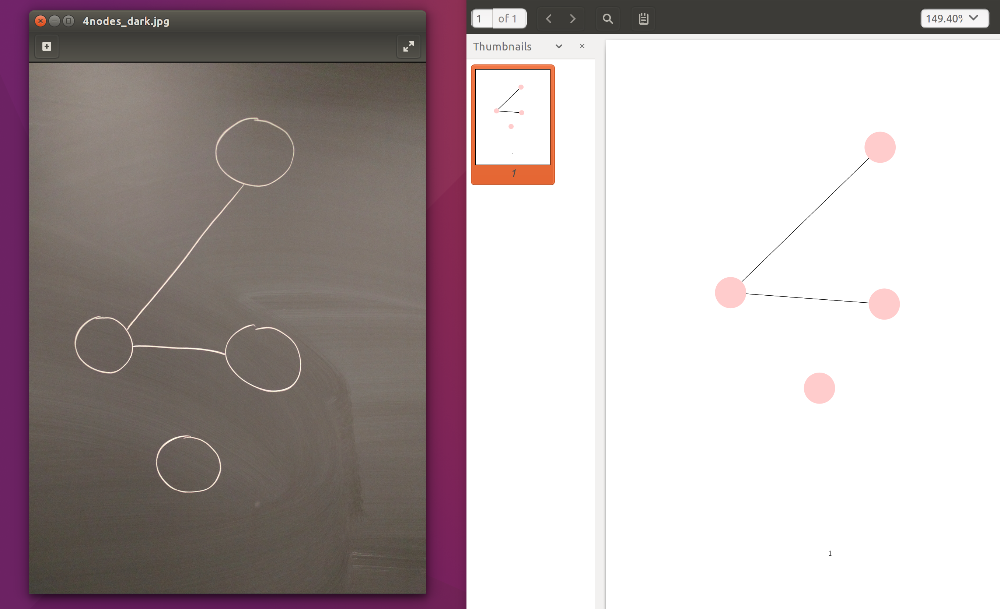
Implented computer vision and machine learning in order to analyze a hand-drawn graph on paper, seach and analyze shapes such as nodes and lines, and translate them into a more tidy and neat LATEX graph. Helped plan computer vision algorithms to detect nodes and lines while worked on optical character recognitiion and arrow direction detection.
Placed in top 30 hacks in PennApps Winter 2017 hackathon.
Placed in top 30 hacks in PennApps Winter 2017 hackathon.
CNN-LSTM Video Classifier
This video was a result of training a CNN-LSTM video classifer on a small dataset. By analyzing a series of frames in each video, the classifer is able to recognize actions going on in the video.
By having CNN encoder taking in the frames, the frames are parsed to be analyzed by the LSTM which analyzes the temporial structure of the frames and decodes the output to get a classification of the video.
Video Panorama Generator
This video is a result from a python script I made that stitches two videos that were recorded from two cameras looking at the same scene at different angle to create video panoramas. Uses the SIFT algorithm to find similar points and calculate a transformation matrix with OpenCV to stitch the videos to together
This video is the end result. May work on improving making the seams less visible when I get the time.
Surround and Capturing Adversarial Agents through Decentralized Multi-Agent Intelligence
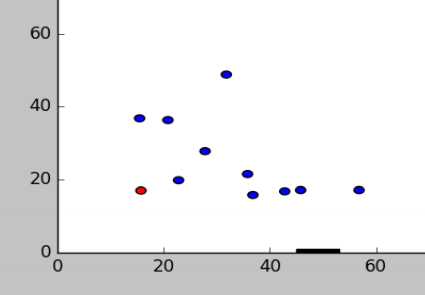
Designed a multi-agent intelligence algorithm (swarm intelligence) where a team of ally agents work together to surround and capture a fleeing adversarial agent. This allowed agents to search for interest points to pursue and surround enemy agent with individual behavior, but minimal communication to work together as an agent team for capturing an adversarial agent.
Abstract was accepted to the National Conference On Undergraduate Research (NCUR 2017) at the Memphis, Tennessee.
You can see the research poster here
Abstract was accepted to the National Conference On Undergraduate Research (NCUR 2017) at the Memphis, Tennessee.
You can see the research poster here
Drawing to Website Generator using Computer Vision
Made an AI website generator that uses computer vision to recognize shapes and position formats of your drawing and turns it into your own website. You would draw a picture of your website, upload your drawing, specify the topic of your website, and the program will extract information from multiple sources about that topic and use the information to populate your generated website.
White Space detector
Implemented canny edge detection and morphological transform in order to search for whitespace or less detailed spaces with an image to write informative headlines or text on to it. Removes the need for content writers to go through endless of photos and manually edit and add text, saving content writers a lot of time.
(This was made for a company, and permission was given to post these)
(This was made for a company, and permission was given to post these)
Road Segmentation For Autonomous Vehicles

Designed a simple script that uses histogram backprojection along with morphological transform in order detect a road in a scene despite any large amounts of noise in the picture. Made to be implemented in the DriveAI project, an initiative for open-source autonomous vehicles.
Rutgers Navigation System
Uses the A* algorithm in order to find the shortest path from point A to point B within Rutgers campus (to find buildings, bus stops, dining halls, etc) (currently Busch campus) as well as kinematics equations to find the time of the walk. Calcuates both the path and information of bus route and walking route to help one determine the more efficient way of getting to a destination (takes into account the bus route, average walking and bus driving speed, and distance between each places)
Force VR Gauntlet
Used a motor (with rope tethered to arm) controlled by the Arduino to make a virtual reality wearable that allows the wearer to experience physical forces. Whenever the user moves / swings his arm in the VR game and a hit is detected, the Arduino recieves that information and pulls on the arm with the motor tethered to arm, creating a locking effect and imitation of a physical force. It was designed to solve the problem of lack of physical forces in virtual reality (say you have a sword. You hit an object and your arm stops because it cannot go through an object, but in VR, your arm would simply phase through the object). With this developped a little bit more, actual sword combat will be finally possible in virtual reality.
Kinect Helper
Used the Kinect to create a workspace that is able to sense the presence of its owner. By using object detection, the
Kinect is able to call a bash script that gives the Kinect control of the computer based on user input, creating a smart workspace. In this case the Kinect can sense when you get up from your chair and will automatically shut off the screen, this saves power and is more convenient than having to do it manually. We also included other features such as the ability to change the brightness of the screen using a hand held up to the sensor. Any other features can be added to the program and controlled with a hand held up to the Kinect.
Leaptop
Used the Leap Motion in order to control some computer functions using just hand gestures. This includes opening up a browser, closing a browser, putting the laptop to sleep, and locking it using hand movements. This was made in Python which was also controlling a bash script.
Hologram Pyramid CAD program
EDIT: I know, the quality of the video isn't that good, so I will upload another video in the near future.
A friend and I made a projector that uses pepper's ghost to create a hologram like image in an acrylic pyramid. Used Unity for the models and projection scene along with Leap Motion to give us the ability to control the orientation of the model. If developped more, it would serve as a CAD program for designers, artists, and engineers so that they can view their models and control them in 3D space.
A friend and I made a projector that uses pepper's ghost to create a hologram like image in an acrylic pyramid. Used Unity for the models and projection scene along with Leap Motion to give us the ability to control the orientation of the model. If developped more, it would serve as a CAD program for designers, artists, and engineers so that they can view their models and control them in 3D space.
Hologram Emotion Face Control
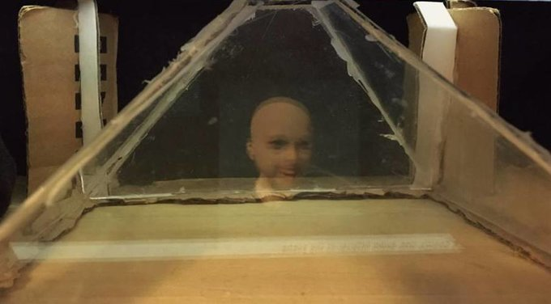
We use the hologram pyramid to project a face into the pyramid. By using convolution neural networks and a server, we were able to change the the hologram face's emotion from happy to angry depending on what the emotion of someone else on another computer. We hope to work on full face control in the future.
Game Development
Myo Multiplayer Sword Fighting Game
Created a sword fighting multiplayer game wheremultiple people can log into the same server and engage sword combat with each other. Programmedthe Myo so that users are able to preform sword attacks through sword cutting like hand gestures. It was designed as a test game that may be implemented with the Force VR Gauntlet.
Twitch Based Jenga Multiplayer Game
Created a Twitch based collaboration game in Jenga where players can log into the same server and play Jenga with each other while the audience is able to interfer with the gameplay in Unity by tying in commands on Twitch. Created this as my first Unity game development project.
NES Zelda recreaton
A game I made in Visual Basic, which is a small segment recreation of the Legend of Zelda for NES.
Web Development
Dodo-Matchmaker
An online code matchmaker website designed for players of the game, "Animal Crossing: New Horizons". Matches different players by distributing online access codes (dodo-code) to different players based on specific conditions. Also contains Facebook verification to help improve responoses to and discourage scams online in the game. Made in Python Flask, socketio, Javascript, HTML, and CSS.
Animal Crossing GIF Storymaker
A web app designed for the game "Animal Crossing: New Horizons". Allows you to generate your own cutscenes based on a particular scene of the character, Isabelle, doing daily morning annoucnements. Uses frames from in game and allows you to mix different reactions in different combinations along with dialogue text customization. Extracted frames from the game and pre-processed using Python before being used in the app.
Check out the site
Check out the site
WannaStudy
A social networking forum designed to help create academic community and supports the circulation of academic information within colleges in order for students to ask and answer questions, form study groups, study online through Google Hangouts (button integrated on site), and share information.
Rutgers Roommate Search Engine
Account system website designed to have users register themselves to a roommate search engine in order to help them or others to find the perfect roommate. Includes an advanced search section, a list of roommates filtered through advance search, profile pages for each user, and roommate lists to add potential roommates on their list.
PVHS GPA Calculator
An old website with PHP/SQL account systems that helps students calculate their GPA (marking period, end-of-year, and current)as well final grad.